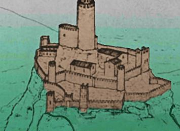
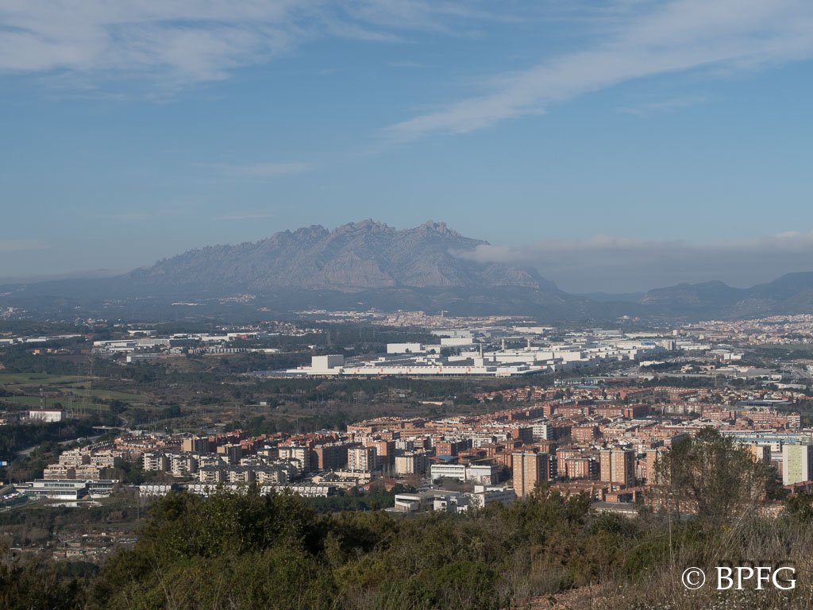
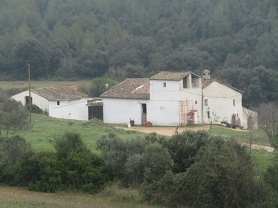

Rutas para senderismo en Martorell
95 Sant Andreu de la Barca-Castell-fuente de Sant Jaume
comenzamos en la calle del Jardín del Pont cruce con la calle Creu de l'Aregall, allí en el cruce cogemos hacia atrás por la calle que vinimos...

Detalles de rutaMartorell-Sierra de las Torretes-Sant Genís de Rocafort
Ruta muy bonita y que te permite ver muchas cosas diferentes en un lugar que normalmente asociamos a zona industrial (hay la fábrica de la Seat)...

Detalles de rutaMartorell-Priorat de Sant Genís-Castell de Rocafort
La Sierra de Ataix, en el extremo noreste de las Montañas del Ordal, incluye muchas más agradables sorpresas de lo que pensábamos inicialmente...
Detalles de rutaCastellbisbal-Can Pastelero-Can Puig-Can Segarra
Excursión fácil tanto en el aspecto físico, como desde el punto técnico, en el que haremos un recorrido circular, desde la urbanización Can Santeugini...

Detalles de ruta